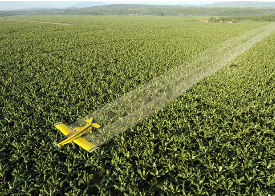
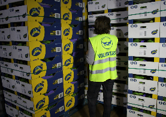
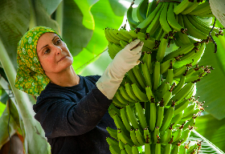

- ●
- ●
- ●
- ●
Nuestros plátanos
Diferencia entre el plátano y la banana
quiero ver más
RECETAS


Últimas Noticias

El Parlamento Europeo rechaza el intento de permitir la importación de alimentos con residuos de algunos pesticidas prohibidos
La reciente decisión del Parlamento Europeo de rechazar el proyecto de reglamento que permitía mantener límites máximos de residuos (LMR) elevados para determinados pesticidas marca un paso positivo hacia una mayor equidad y protección. ...
Leer más

Plátano de Canarias reanuda las donaciones en toda España a través de los Bancos...
En las primeras dos semanas de septiembre, entidades sociales de 23 provincias recibirán gratuitamente más de 3,5 millones de plátanos, que se suman a los más de 7 millones donados a lo largo de 2024 Los productores de Plátano de Canarias contribuyen aportando la fruta gratuitamente y asumiendo los costes del transporte y distribución desde Canarias a las plataformas de los diferentes Bancos de Alimentos.
Leer más

Todo por el plátano, pero sin el plátano
Los grupos políticos del Parlamento de Canarias aprueban una Proposición No de Ley (PNL) con propuestas que no resuelven la rentabilidad del cultivo del plátano en Canarias, fomentan la desunión entre los productores y reprueban las medidas que les permiten sobrevivir en períodos de crisis de mercado...
Leer más